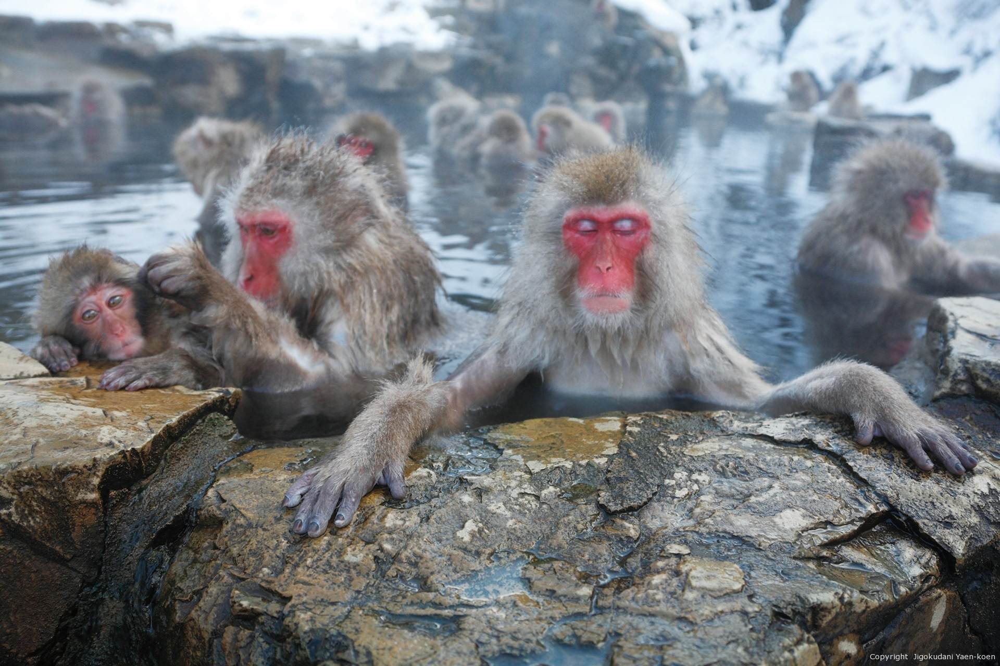
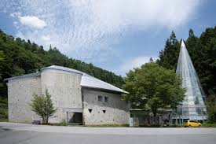
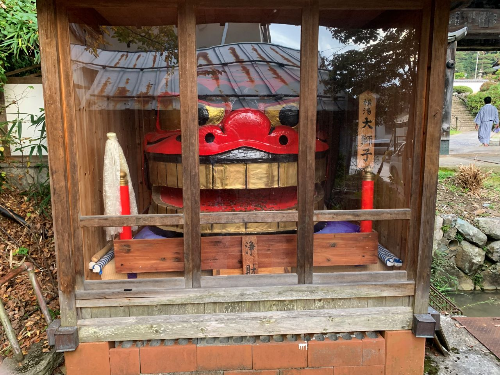
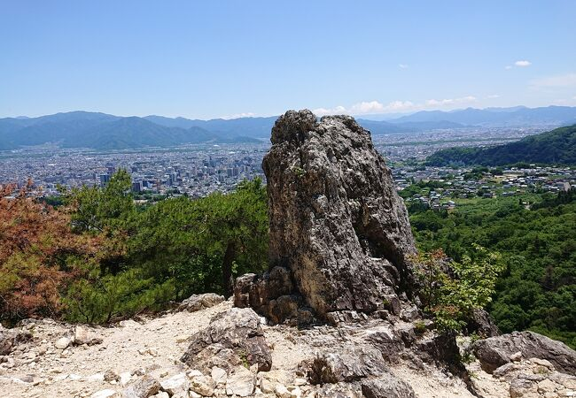

地獄谷野猿公苑
もっと見る(外部サイトに遷移します)>>
世界平和観音
もっと見る(外部サイトに遷移します)>>志賀高原ロマン美術館
もっと見る(外部サイトに遷移します)>>横湯大獅子
動き岩

六地蔵
|

地獄谷野猿公苑 もっと見る(外部サイトに遷移します)>> |
世界平和観音 もっと見る(外部サイトに遷移します)>> |
|

志賀高原ロマン美術館 もっと見る(外部サイトに遷移します)>> |

横湯大獅子 |
|

動き岩 |
六地蔵 |